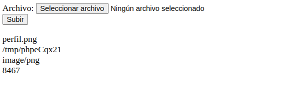

4.3. Formularis¶
4.3. Formularis¶
A l'hora d'enviar un formulari, hem de tindre clar quan usar el mètode GET o el mètode POST:
GET: els paràmetres es passen en la URL i són visibles directament en la barra d'adreces del navegador.
- <2048 caràcters (depenent del navegador i del servidor).
-
Només accepta caràcters ASCII (alfanumèrics, espais codificats, etc.).
-
Permet emmagatzemar l'adreça completa (guardar la URL en marcadors o en l'historial).
-
Idempotent: dues crides amb les mateixes dades sempre han de donar el mateix resultat.
-
El navegador pot guardar en memòria cau les crides (per a agilitzar les visites repetides a la mateixa URL).
Exemple
https://ejemplo.com/buscar?nombre=Alba&edad=2
POST: paràmetres ocults (encara que no són visibles en la URL, les dades no estan xifrades; és menys probable que els usuaris manipulen manualment les dades).
- Sense límit de dades.
- Permet dades binàries (imatges, fitxers, JSON, etc.).
- No es poden guardar en memòria cau (els navegadors no emmagatzemen les sol·licituds
POSTen memòria cau ni les inclouen en l'historial; i així no es repetixen accidentalment). - No idempotent (generalment canvien l'estat del servidor, com ara actualitzar una base de dades).
Així doncs, per a recollir les dades accedirem a l'array depenent del mètode del formulari que ens ha invocat:
<?php
$par = $_GET["parametro"]
$par = $_POST["parametro"]
Exemple
Per als apartats següents ens basarem en el formulari d'exemple següent:
<form action="formulario.php" method="GET">
<p>
<label for="nombre">Nombre del alumno:</label>
<input type="text" name="nombre" id="nombre" value="" />
</p>
<p>
<input type="checkbox" name="modulos[]" id="modulosDWES" value="DWES" />
<label for="modulosDWES">Desarrollo web en entorno servidor</label>
</p>
<p>
<input type="checkbox" name="modulos[]" id="modulosDWEC" value="DWEC" />
<label for="modulosDWEC">Desarrollo web en entorno cliente</label>
</p>
<input type="submit" value="Enviar" name="enviar" />
</form>
1. Validació¶
Pel que fa a la validació, sempre és convenient fer validació doble:
- En el client mitjançant JS.
- En el servidor, abans de cridar la lògica de negoci, és convenient tornar a validar les dades.
<?php
if (isset($_GET["parametro"])) {
$par = $_GET["parametro"];
// comprobar si $par tiene el formato adecuado, su valor, etc...
}
Llibreries de validació
Hi ha diverses llibreries que faciliten la validació dels formularis, com ara respect/validation o particle/validator. Quan estudiem Laravel aprofundirem en la validació de manera declarativa.
2. Paràmetres multivalor¶
Hi ha elements HTML que envien diversos valors:
select multiplecheckbox
Per a recollir les dades, el nom de l'element ha de ser un array:
Exemple
<!-- Ejemplo selección múltiple -->
<select name="lenguajes[]" multiple="true">
<option value="c">C</option>
<option value="java">Java</option>
<option value="php">PHP</option>
<option value="python">Python</option>
</select>
<!-- Ejemplo casillas múltiples -->
<input type="checkbox" name="lenguajes2[]" value="c" />C<br />
<input type="checkbox" name="lenguajes2[]" value="java" />Java<br />
<input type="checkbox" name="lenguajes2[]" value="php" />Php<br />
<input type="checkbox" name="lenguajes2[]" value="python" />Python<br />
Més tard, en el fitxer de destinació, este array es tractarà com un array associatiu:
<?php
$lenguajes = $_GET["lenguajes"];
foreach ($lenguajes as $lenguaje)
{
echo "$lenguaje <br />";
}
3. Tornar a omplir un formulari¶
Un sticky form és un formulari que recorda els seus valors. Per a això, hem d'omplir els atributs value dels elements HTML amb la informació que contenien:
<?php
if (!empty($_POST['nombre']) && !empty($_POST['modulos']))
{
// Aquí se incluye el código a ejecutar cuando los datos son correctos
} else {
/* Generamos el formulario:
* El operador ?? verifica si el valor a la izquierda existe y no es null.
* Si es así, se utiliza ese valor. Si no, se toma el valor a la derecha
* como valor predeterminado.
*/
$nombre = $_POST['nombre'] ?? "";
$modulos = $_POST['modulos'] ?? [];
?>
<form action="<?php echo $_SERVER['PHP_SELF'];?>" method="POST">
<p>
<label for="nombre">Nombre alumno:</label>
<input type="text" name="nombre" id="nombre" value="<?= $nombre ?>" />
</p>
<p>
<input type="checkbox" name="modulos[]" id="modulosDWES" value="DWES"
<?php if(in_array("DWES",$modulos)) echo 'checked="checked"'; ?> />
<label for="modulosDWES">Desarrollo web en entorno servidor</label>
</p>
<p>
<input type="checkbox" name="modulos[]" id="modulosDWEC" value="DWEC"
<?php if(in_array("DWEC",$modulos)) echo 'checked="checked"'; ?> />
<label for="modulosDWEC">Desarrollo web en entorno cliente</label>
</p>
<input type="submit" value="Enviar" name="enviar"/>
</form>
<?php
} // cierre del else
?>
4. Pujar fitxers¶
S'emmagatzemen en el servidor en l'array $_FILES amb el nom del camp de tipus file del formulari.
<form enctype="multipart/form-data" action="<?php echo $_SERVER['PHP_SELF']; ?>" method="POST">
Archivo: <input name="archivoEnviado" type="file" />
<br />
<input type="submit" name="btnSubir" value="Subir" />
</form>
Configuració en php.ini:
file_uploads: on / off.upload_max_filesize: 2M.upload_tmp_dir: directori temporal. No cal configurar-lo, agafarà el predeterminat del sistema.post_max_size: grandària màxima de les dades POST. Ha de ser major que upload_max_filesize.max_file_uploads: nombre màxim de fitxers que es poden carregar alhora.max_input_time: temps màxim emprat en la càrrega (GET/POST i upload → normalment es configura en 60).memory_limit: 128M.max_execution_time: temps d'execució d'un script (no té en compte l'upload).
Vegem de quina informació disposem en l'array $_FILES per a una imatge anomenada perfil.png pujada mitjançant el nostre formulari:
<form enctype="multipart/form-data" action="<?php echo $_SERVER['PHP_SELF']; ?>" method="POST">
Archivo: <input name="archivoEnviado" type="file" />
<br />
<input type="submit" name="btnSubir" value="Subir" />
</form>
<?php
if (isset($_POST['btnSubir'])) {
echo $_FILES['archivoEnviado']['name'];
echo "<br>";
echo $_FILES['archivoEnviado']['tmp_name'];
echo "<br>";
echo $_FILES['archivoEnviado']['type'];
echo "<br>";
echo $_FILES['archivoEnviado']['size'];
} else {
echo "No se ha pulsado el botón de subir";
}
?>

Cada fitxer carregat en $_FILES té:
name: nom.tmp_name: nom temporal assignat al fitxer pel servidor. Este nom és únic i permet identificar-lo dins de la carpeta de temporals.size: grandària en bytes.type: tipus MIME.error: codi d'error de la pujada, en el nostre cas 0 o UPLOAD_ERR_OK, que indica que no s'ha produït cap error. Codis d'error de pujada de fitxers.
Per a carregar els fitxers, accedim a l'array $_FILES:
<?php
if (isset($_POST['btnSubir']) && $_POST['btnSubir'] == 'Subir') {
if (isset($_FILES['archivoEnviado']) && is_uploaded_file($_FILES['archivoEnviado']['tmp_name'])) {
// subido con éxito
$nombre = $_FILES['archivoEnviado']['name'];
move_uploaded_file($_FILES['archivoEnviado']['tmp_name'], "./uploads/{$nombre}");
echo "<p>Archivo $nombre subido con éxito</p>";
}
} else {
echo "<p>Error al subir el archivo: " . $_FILES['archivoEnviado']['error'] . "</p>";
}
- que la carpeta
./uploadsestiga creada prèviament i amb permisos d'escriptura. - PHP té un límit en la grandària dels fitxers que es poden pujar, configurat en php.ini mitjançant les directives
upload_max_filesizeipost_max_size.
4.1. Filtratge amb PHP dels tipus de fitxers pujats amb HTML¶
Una vegada sabem com accedir a la informació dels fitxers pujats, ens centrarem en el filtratge dels tipus de fitxers acceptats. Limitar el tipus de fitxer pujat és recomanable per a evitar possibles problemes de seguretat.
Per a este exemple es comprovarà que la imatge pujada siga en efecte una imatge amb una de les extensions més comunes i que la seua grandària siga menor d'1 MB:
<?php
$extensiones = ['image/jpg','image/jpeg','image/png'];
$max_tamanyo = 1024 * 1024 * 8;
if ( in_array($_FILES['archivoEnviado']['type'], $extensiones) ) {
echo 'Es una imagen';
if ( $_FILES['archivoEnviado']['size'] < $max_tamanyo ) {
echo 'Pesa menos de 1 MB';
}
}
?>
4.2. Escriptura d'imatges en una carpeta del servidor¶
Una vegada tinguem els nostres fitxers filtrats, procedirem a guardar-los de manera permanent en una carpeta del nostre servidor.
Les imatges o fitxers pujats mitjançant els formularis HTML s'emmagatzemen sempre en una carpeta temporal del sistema, per tant haurem de moure'ls per a poder guardar-los permanentment.
Per a traslladar els fitxers de la carpeta temporal directament a la carpeta triada usarem la funció move_uploaded_file (origen, destino).
L'exemple següent seria un script allotjat en la carpeta arrel de la nostra web, p. ex. index.php:
<?php
$ruta_indexphp = dirname(realpath(__FILE__));
$ruta_fichero_origen = $_FILES['archivoEnviado']['tmp_name'];
$ruta_nuevo_destino = $ruta_indexphp . '/uploads/' . $_FILES['imagen1']['name'];
if ( in_array($_FILES['archivoEnviado']['type'], $extensiones) )
{
echo 'Es una imagen';
if ( $_FILES['archivoEnviado']['size']< $max_tamanyo )
{
echo 'Pesa menos de 1 MB';
if( move_uploaded_file ( $ruta_fichero_origen, $ruta_nuevo_destino ) )
{
echo 'Fichero guardado con éxito';
}
}
}
?>
- El nom temporal del fitxer pujat, que es troba en la carpeta de temporals, és
$ruta_fichero_origen. - La ruta completa de destinació del fitxer, que es compon d'una banda de la ruta arrel de l'script on estem treballant (estem programant en index.php), més el nom de la carpeta que s'ha creat per a guardar les imatges (/uploads) i, finalment, el nom definitiu que tindrà el fitxer (el nom original del fitxer).
4.3. Seguretat en l'escriptura d'imatges en una carpeta del servidor¶
En guardar els fitxers pujats pels usuaris en el nostre servidor, pot passar que no filtrem els fitxers introduïts, o que guardem fitxers susceptibles de provocar problemes de seguretat.
Per a evitar problemes d'este tipus el millor serà incloure en la carpeta on emmagatzemem els fitxers (p. ex. en la carpeta ./uploads) un xicotet script htaccess que evite l'execució de codi:
RemoveHandler .phtml .php3 .php .pl .py .jsp .asp .htm .shtml .sh .cgi .dat
RemoveType .phtml .php3 .php .pl .py .jsp .asp .htm .shtml .sh .cgi .dat
Amb estes dues línies en un fitxer amb extensió .htaccess evitarem una possible execució de codi per part d'usuaris malintencionats. Recorda que has d'incloure este fitxer en la mateixa carpeta on emmagatzemes els fitxers.
I ja està, amb això tindríem acabat un formulari per a pujar imatges amb PHP totalment funcional, amb comprovacions de seguretat per a evitar pujades de fitxers inesperades que puguen provocar problemes o atacs inesperats.
Extra
Extra 1: mostrar imatges pujades amb HTML¶
Mostrar les imatges guardades en la nostra carpeta d'emmagatzematge és senzill, només haurem d'incloure la ruta fins al fitxer en una etiqueta IMG d'HTML:
<a href="uploads/nombreImagen.jpg"> Descarga de la imagen </a>Extra 2: descarregar fitxers pujats amb HTML¶
Si volem incloure un enllaç de descàrrega per al fitxer emmagatzemat, en compte d'utilitzar una etiqueta IMG usarem una etiqueta d'enllaç amb la ruta al fitxer en l'atribut HREF:
<a href="uploads/nombreImagen.jpg"> Descarga de la imagen </a>Este enllaç farà que l'usuari descarregue el fitxer en qüestió; no obstant això, si el fitxer és, per exemple, una imatge o un PDF, l'usuari, en compte d'aconseguir una descàrrega directa, en visualitzarà el contingut, i l'haurà de descarregar fent ús de l'opció descarregar del menú desplegable amb clic dret.
Evitar la visualització de fitxers és possible gràcies a HTML5 i als navegadors més moderns: Chrome, Firefox, Opera. Haurem d'incloure l'atribut
downloaden l'etiqueta d'enllaç anterior; així, l'enllaç final per a una descàrrega forçada quedaria així:<a href="uploads/nombreImagen.jpg" download="nombreImagen">Descarga la imagen</a>
Exercicis a realitzar
- Exercici 402
- Exercici 403
- Exercici 404
- Exercici 405